Compte pro : plat du jour, bons plans, événements. Chaque case se lit dans l’ordre, de gauche à droite.
Un compte pro se demande depuis un compte habitant. L’équipe examine chaque demande.
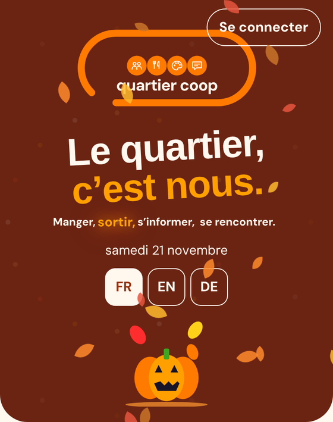
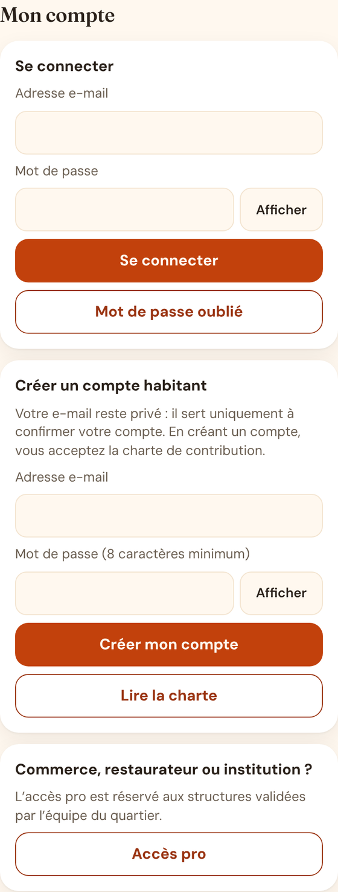
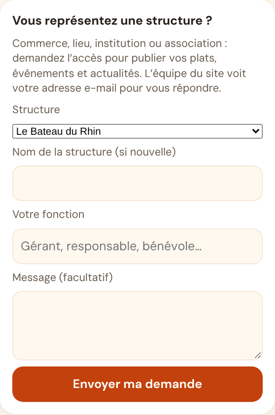
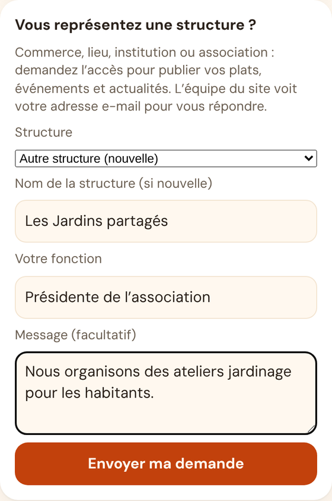
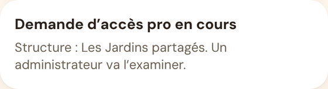
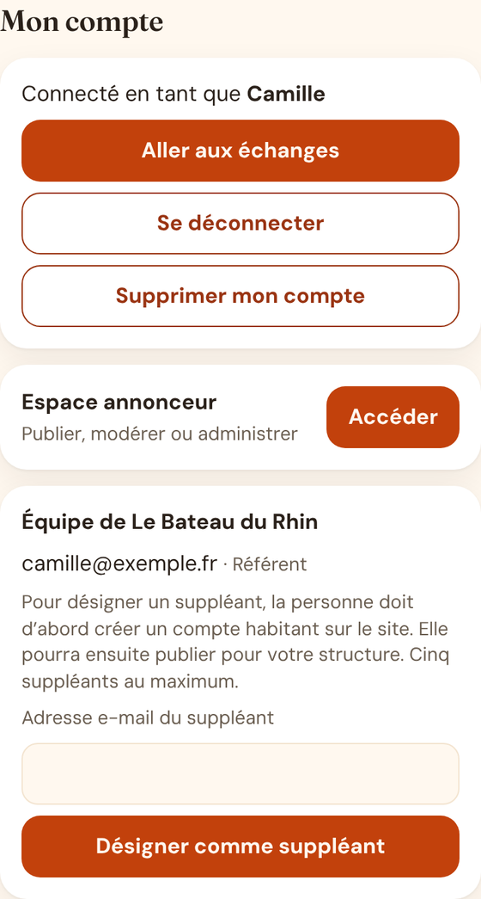
Ce qu’il faut savoir pour se repérer.
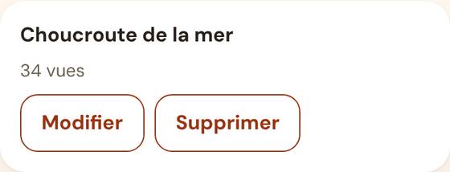
« Aller aux échanges » dans Mon compte ouvre l’onglet Paroles.
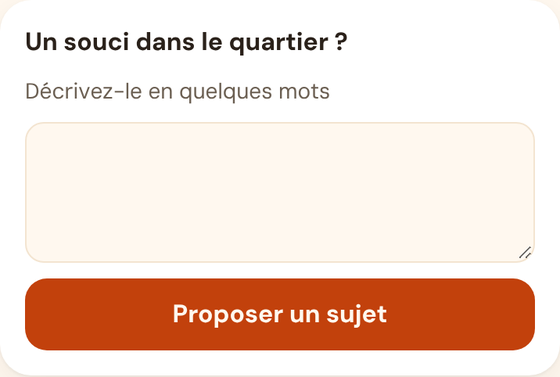
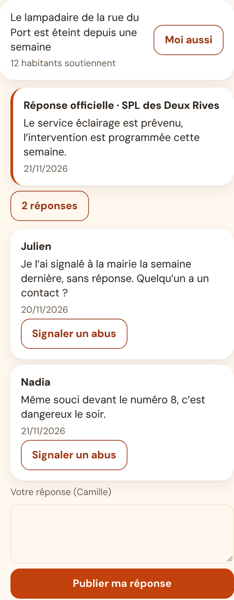
Trois cartes dans votre espace annonceur.
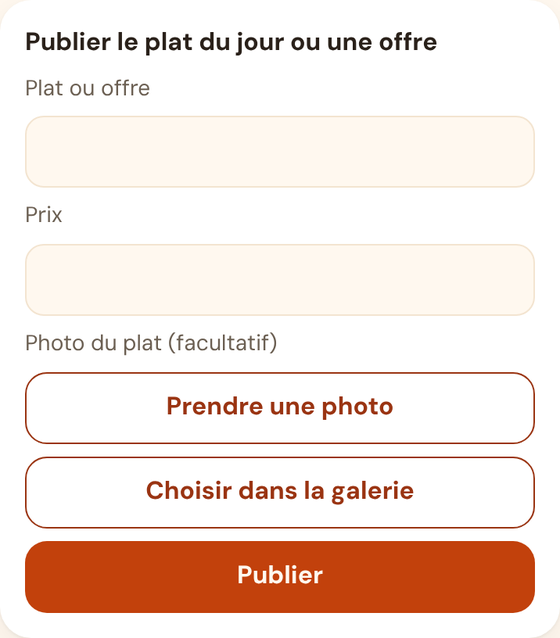
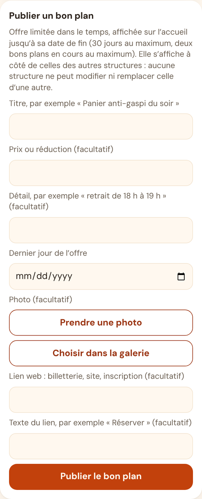
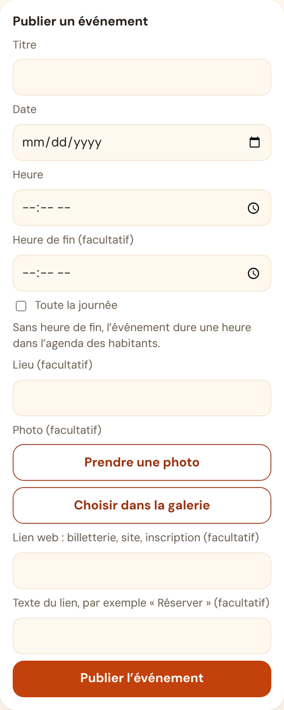
Une structure peut avoir 5 suppléants au maximum, en plus de son référent.
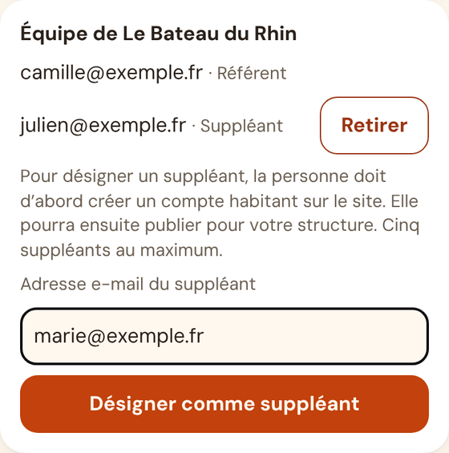
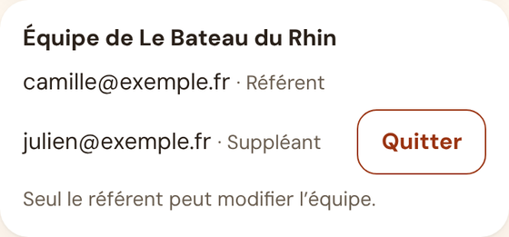
| Message | Cause | Solution |
|---|---|---|
| Aucun compte avec cette adresse | Pas de compte habitant, ou adresse différente | La personne crée son compte, puis vérifiez l’adresse |
| Cette personne est déjà suppléante | Elle est déjà dans l’équipe | Rien à faire |
| Cinq suppléants au maximum | L’équipe est complète | Retirez un suppléant, puis réessayez |
| Seul le référent peut désigner un suppléant | Votre compte est suppléant | Demandez au référent |
Rechargez la page, ou déconnectez-vous puis reconnectez-vous.
Mes publications, puis Supprimer. Une actualité ou un bon plan se supprime depuis sa liste. L’équipe peut aussi le retirer.
L’équipe du site, dans votre demande, pour vous répondre. Les habitants ne voient que votre pseudo.
Renvoyez-en une, en précisant votre fonction et ce que vous voulez publier.
Dans Mon compte, bouton Supprimer mon compte.